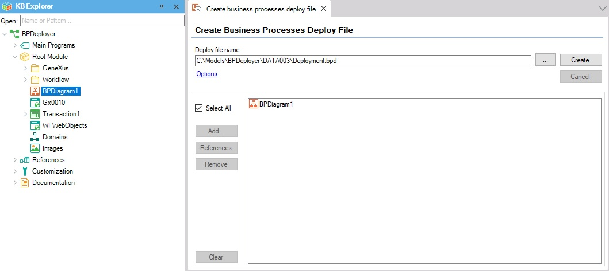
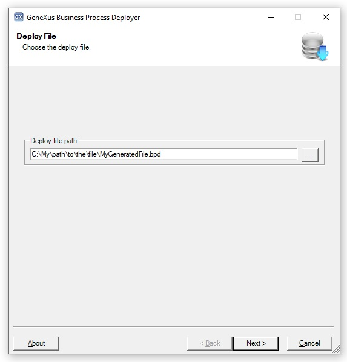
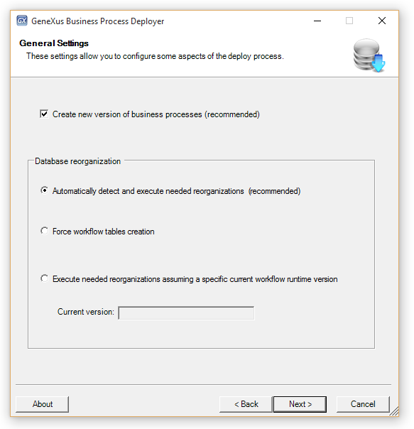
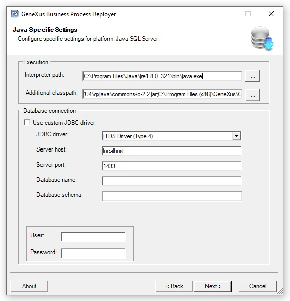
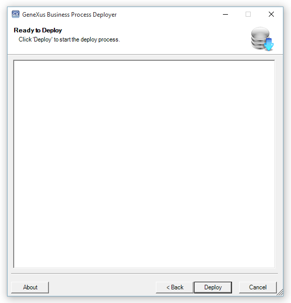
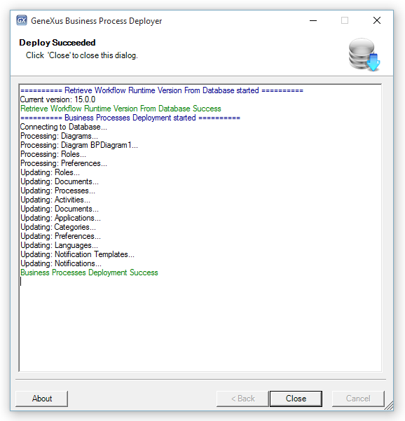

This tool helps developers deploy their Business Process Diagram object and, consequently, impact the production database.
1) Export your Business Process Diagrams from the Genexus IDE by selecting Tools/Workflow/Create business process deploy file.

2) Once the diagrams have been exported, you need to run the Business Process Deployer. To do so, go to Start/Programs/GXflowX/Business Process Deployer and the following sequence of wizards will appear.
3) In the first one, select the deployment file created in step 1.

4) Next, set your deployment preferences.

- Create new version of business processes: A new version of the business processes is created. This option is recommended to avoid changing the flow of active processes that are running with a previous version of the business processes.
- Automatically detect and execute needed reorganizations: The version in the database will be automatically detected and all the needed reorganizations will be executed.
- Force workflow tables creation: When you force the creation of workflow tables, the tables will be overwritten and no reorganizations will be done. All the processes that are running will be lost, so it is not advisable if you are in a production state. Also, if your licenses are local, they will be lost. Therefore, it is recommended to uninstall them first, then create the tables, and finally request them again.
- Execute needed reorganizations assuming a specific current workflow runtime version: You must select the current version in the database and all the needed reorganizations will be executed.
5) This step will vary depending on the environment you are using. If your deployment file is for a Java environment, an Execution section will be displayed and, in the additional classpath field, you must indicate at least the *.jar file of JTDS (located in <GeneXus installation>\gxjava\drivers). If your application uses other external Java resources, you must include them too. When your file is for a .NET or .NET Core environment, the Execution section is not displayed and a "Use Windows NT integrated security" option is available to authenticate to the database.

- Below is an example of a classpath you might need: C:\Program Files (x86)\GeneXus\GeneXusXX\gxjava\gxclassR.jar;C:\Program Files (x86)\GeneXus\GeneXusXX\gxjava\gxcommon.jar;C:\Program Files (x86)\GeneXus\GeneXusXX\gxjava\gxwrappercommon.jar;C:\Program Files (x86)\GeneXus\GeneXusXX\gxjava\gxwrapperjavax.jar;C:\Program Files (x86)\GeneXus\GeneXusXX\gxjava\gxcryptocommon.jar;C:\Program Files (x86)\GeneXus\GeneXusXX\gxjava\gxgeospatial.jar;C:\Program Files (x86)\GeneXus\GeneXusXX\gxjava\gxexternalproviders.jar;C:\Program Files (x86)\GeneXus\GeneXusXX\gxjava\commons-collections4-4.1.jar;C:\Program Files (x86)\GeneXus\GeneXusXX\gxjava\commons-io-2.2.jar;C:\Program Files (x86)\GeneXus\GeneXusXX\gxjava\commons-lang-2.6.jar;C:\Program Files (x86)\GeneXus\GeneXusXX\gxjava\commons-codec-1.9.jar;C:\Program Files (x86)\GeneXus\GeneXusXX\gxjava\commons-math3-3.6.1.jar;C:\Program Files (x86)\GeneXus\GeneXusXX\gxjava\commons-compress-1.21.jar;C:\Program Files (x86)\GeneXus\GeneXusXX\gxjava\commons-logging-1.0.4.jar;C:\Program Files (x86)\GeneXus\GeneXusXX\gxjava\commons-io-2.2.jar;C:\Program Files (x86)\GeneXus\GeneXusXX\gxjava\log4j-api-2.17.1.jar;C:\Program Files (x86)\GeneXus\GeneXusXX\gxjava\log4j-core-2.17.1.jar;C:\Program Files (x86)\GeneXus\GeneXusXX\gxjava\log4j-1.2-api-2.17.1.jar;C:\Program Files (x86)\GeneXus\GeneXusXX\gxjava\bcutil-jdk15on-1.69.jar;C:\Program Files (x86)\GeneXus\GeneXusXX\gxjava\bcprov-jdk15on-1.69.jar;C:\Program Files (x86)\GeneXus\GeneXusXX\gxjava\bcpkix-jdk15on-1.69.jar;C:\Program Files (x86)\GeneXus\GeneXusXX\gxjava\drivers\ojdbc8.jar;C:\Program Files (x86)\GeneXus\GeneXusXX\gxjava\drivers\jtds-1.2.jar;C:\Program Files (x86)\GeneXus\GeneXusXX\Packages\Gxpm\WFCache\Java\wfcache.jar;
6) Finally, click on the Deploy button to start the deployment process.


HowTo: Deploying a Workflow-based Application
Business Process Deployer Command line
HowTo: Enable Log for GXflow BPDeployer